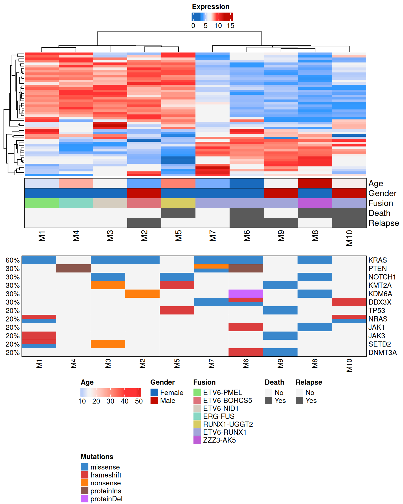

# 安装包
if (!requireNamespace("data.table", quietly = TRUE)) {
install.packages("data.table")
}
if (!requireNamespace("jsonlite", quietly = TRUE)) {
install.packages("jsonlite")
}
if (!requireNamespace("ComplexHeatmap", quietly = TRUE)) {
install.packages("ComplexHeatmap")
}
if (!requireNamespace("circlize", quietly = TRUE)) {
install.packages("circlize")
}
if (!requireNamespace("randomcoloR", quietly = TRUE)) {
install.packages("randomcoloR")
}
if (!requireNamespace("ggplotify", quietly = TRUE)) {
install.packages("ggplotify")
}
if (!requireNamespace("stringr", quietly = TRUE)) {
install.packages("stringr")
}
if (!requireNamespace("cowplot", quietly = TRUE)) {
install.packages("cowplot")
}
if (!requireNamespace("hiplotlib", quietly = TRUE)) {
remotes::install_github("hiplot/hiplotlib")
}
# 加载包
library(data.table)
library(jsonlite)
library(ComplexHeatmap)
library(circlize)
library(randomcoloR)
library(ggplotify)
library(stringr)
library(cowplot)
library(hiplotlib)复合热图
一个多组学插件同时绘制热图、注释和突变信息。
环境配置
系统: Cross-platform (Linux/MacOS/Windows)
编程语言: R
依赖包:
data.table;jsonlite;ComplexHeatmap;circlize;randomcoloR;ggplotify;stringr;cowplot;hiplotlib
数据准备
# 加载数据
data <- data.table::fread(jsonlite::read_json("https://hiplot.cn/ui/basic/complex-heatmap/data.json")$exampleData[[1]]$textarea[[1]])
data <- as.data.frame(data)
data2 <- data.table::fread(jsonlite::read_json("https://hiplot.cn/ui/basic/complex-heatmap/data.json")$exampleData[[1]]$textarea[[2]])
data2 <- as.data.frame(data2)
# 整理数据格式
keep_vars_ref <- ls()
row.names(data) <- data[, 1]
data <- data[, -1]
axis_raw <- c("KRAS","GBP4")
exp_start_col <- which(colnames(data) == axis_raw[2])
mut_start_col <- which(colnames(data) == axis_raw[1])
heat_mat <- as.matrix(t(data[, exp_start_col:ncol(data)]))
mut_mat <- as.matrix(t(data[, mut_start_col:(exp_start_col - 1)]))
mut_mat[is.na(mut_mat)] <- ""
color_key <- c("#196ABD", "#3399FF", "#3399FF", "#f4f4f4", "#f4f4f4", "#f4f4f4", "#FF3333", "#FF3333", "#C20B01")
cols <- c()
for (i in 1:nrow(data2)) {
cols[data2[i,1]] <- data2[i,2]
}
col_meta <- list()
col_meta_pre <- list()
items <- c()
for (i in 1:(mut_start_col - 1)) {
ref <- unique(data[, i])
ref <- ref[!is.na(ref) & ref != ""]
if (any(is.numeric(ref)) & length(ref) > 2) {
col_meta_pre[[colnames(data)[i]]] <- hiplotlib::col_fun_cont(data[,i])
} else if (length(ref) == 2 & any(is.numeric(ref))) {
col_meta_pre[[colnames(data)[i]]] <- c("#f4f4f4", "#5a5a5a")
items <- c(items, ref)
} else if (length(ref) == 2 & any(is.character(ref))) {
col_meta_pre[[colnames(data)[i]]] <- c("#196ABD", "#C20B01")
items <- c(items, unique(data[, i]))
} else if (length(unique(data[, i])) > 2) {
col_meta_pre[[colnames(data)[i]]] <- distinctColorPalette(
length(unique(data[, i]))
)
items <- c(items, unique(data[, i]))
}
}
meta_mat2 <- NULL
meta_mat2_unique_names <- c()
meta_mat2_unique_cols <- c()
for (i in names(col_meta_pre)) {
if (!is.function(col_meta_pre[[i]])) {
meta_mat2_unique_names <- c(meta_mat2_unique_names, i)
meta_mat2_unique_cols <- c(meta_mat2_unique_cols, col_meta_pre[[i]])
meta_mat2 <- cbind(meta_mat2, data[, i])
colnames(meta_mat2)[ncol(meta_mat2)] <- i
} else {
col_meta[[i]] <- col_meta_pre[[i]]
}
}
meta_mat2 <- as.matrix(meta_mat2)
col_meta[["Meta2"]] <- structure(
names = items[!duplicated(items)],
meta_mat2_unique_cols[!duplicated(items)]
)
# 查看数据
head(data) Age Gender Fusion Death Relapse KRAS TP53 NRAS
M1 12 Female ETV6-PMEL 0 0 missense <NA> missense/frameshift
M2 5 Male ETV6-BORCS5 0 1 missense <NA> <NA>
M3 16 Female ETV6-NID1 0 0 missense <NA> <NA>
M4 26 Female ERG-FUS 0 0 <NA> <NA> <NA>
M5 32 Female RUNX1-UGGT2 1 0 <NA> frameshift <NA>
M6 1 Female ETV6-RUNX1 1 1 missense <NA> <NA>
JAK1 JAK3 PTEN NOTCH1 KMT2A SETD2
M1 <NA> frameshift <NA> <NA> <NA> missense/frameshift
M2 <NA> <NA> <NA> <NA> <NA> <NA>
M3 <NA> <NA> <NA> missense nonsense nonsense
M4 <NA> <NA> proteinIns <NA> <NA> <NA>
M5 <NA> <NA> <NA> missense frameshift <NA>
M6 frameshift <NA> proteinIns <NA> <NA> <NA>
KDM6A DNMT3A DDX3X GBP4 BCAT1
M1 <NA> <NA> 6.599344 5.760380
M2 nonsense <NA> <NA> 5.226266 4.892783
M3 <NA> <NA> <NA> 3.693288 5.448924
M4 <NA> <NA> <NA> 3.938501 3.485413
M5 <NA> <NA> <NA> 4.527193 3.855669
M6 proteinDel frameshift missense/frameshift/missense 9.308119 8.662081
CMPK2 STOX2 PADI2 SCARNA5 ALOX12P2 SNORA74B HIST1H2BL MNDA
M1 9.561905 8.396409 8.419766 7.653074 9.001421 5.538709 6.181270 8.702635
M2 4.549168 8.717055 8.268430 5.780393 7.753542 7.169053 4.448419 7.322352
M3 3.998655 8.039064 8.451181 10.633550 4.920960 11.441646 5.604961 9.271821
M4 5.614384 7.643060 9.200732 5.913684 7.636354 5.982566 6.485168 9.134515
M5 3.904793 9.274649 8.598207 8.805605 9.888625 8.394403 2.599574 8.339114
M6 9.790770 4.417013 4.590033 5.890120 6.211944 4.751559 7.630177 4.571902
OLFM4 FLT3 CHD7 NFIL3 HSPA1B AP5B1 IPCEF1 LRG1
M1 9.345308 5.164306 8.373475 8.055416 5.008199 8.236820 8.263067 8.553083
M2 6.438607 4.419355 8.728032 8.365100 9.194650 8.972639 9.287856 9.053322
M3 8.716761 5.063551 8.408818 9.239194 6.598850 8.204217 8.602233 9.074509
M4 9.685545 5.412784 8.716476 8.536825 7.129509 8.432428 8.491156 8.736700
M5 7.688262 3.337863 8.373771 8.452351 3.885270 9.224007 8.447699 7.656333
M6 5.969804 8.585164 4.613199 4.478527 5.712179 4.424204 4.483936 4.529944
THBS4 RGL4 MPP7 UGCG CYSTM1 ANXA2 ENDOD1 ARHGAP24
M1 8.881039 8.454808 8.690520 8.648366 8.628884 4.983769 5.551640 6.890079
M2 8.896205 8.019389 8.630346 8.600555 9.238677 6.748022 5.406465 8.883941
M3 7.844801 8.990836 7.080873 9.431046 8.487243 6.220791 4.663785 9.560651
M4 8.739369 9.718631 9.838476 7.923021 8.958537 4.719403 3.550765 8.285674
M5 8.627063 7.908075 8.271824 8.309214 7.357109 3.284346 4.103507 9.043752
M6 4.699310 4.147051 5.179200 4.902510 4.541605 8.089850 8.393991 3.544010
CST7 HIST1H2BM EREG EMP1 NFAM1 SLC40A1 CD52 HIST1H2BH
M1 7.883061 6.186908 8.598145 4.837475 8.656290 9.520822 4.230927 5.805177
M2 8.546585 4.448803 4.920184 5.999576 9.957289 4.630086 5.932496 4.343197
M3 8.364553 5.428771 9.227645 6.115168 7.319900 5.116486 5.011898 6.139380
M4 9.540110 6.747681 5.222157 5.056323 8.073514 9.346003 5.101308 5.817530
M5 8.697473 2.577579 4.689850 4.808930 9.016658 9.813192 4.398327 2.513284
M6 3.557674 7.828233 8.703617 6.713164 4.517623 6.101416 6.380094 8.188458
PFKFB3 SNORD116-20 STX11 SYNE2 TCN1 SNORA74A CD74 EIF4E3
M1 7.424257 8.377058 8.338488 9.110726 8.193179 5.498904 5.017443 9.366888
M2 9.676785 5.359553 8.565954 9.678361 8.907285 5.062103 5.383978 8.360189
M3 8.935156 8.694841 8.767868 8.405612 8.713848 12.561499 3.405651 5.655052
M4 8.045833 8.044567 9.403257 6.946242 8.980928 5.839202 3.264327 4.287721
M5 8.890690 2.953568 7.892702 8.156073 7.627558 7.581051 5.602966 8.713765
M6 4.273864 7.268419 4.205835 5.791007 4.626609 5.498296 8.550157 8.880801
MYO7B MX1 LDLR S100P PTPRCAP KIT OLR1 NKG7
M1 8.796115 10.739903 3.302395 8.356363 5.028667 5.888212 9.018682 7.312523
M2 9.265837 4.504043 10.582430 7.915491 4.724011 2.533194 7.936957 10.372964
M3 7.865640 4.714303 6.209913 9.481770 4.122229 5.077111 9.390897 7.937744
M4 8.785320 6.244798 3.804214 9.642993 4.188948 4.744693 8.897994 8.161249
M5 9.209703 4.891501 4.631391 8.363519 3.803051 4.839051 8.668925 9.671051
M6 4.272202 10.727879 5.534046 3.699451 8.525159 9.085158 5.261595 4.164076可视化
# 复合热图
params <- list()
for (i in names(col_meta)) {
if (i != "Meta2") {
params[[i]] <- data[, i]
}
}
params2 <- list(
Meta2 = meta_mat2,
gap = 0,
border = TRUE,
show_annotation_name = TRUE,
col = col_meta,
na_col = "#FFFFFF",
show_legend = FALSE,
annotation_legend_param = list(direction = "horizontal")
)
for (i in names(params2)) {
params[[i]] <- params2[[i]]
}
ha <- do.call(HeatmapAnnotation, params)
hlist <- Heatmap(heat_mat,
col = hiplotlib::col_fun_cont(heat_mat, cols = color_key),
name = "Expression",
gap = 0,
clustering_distance_columns = "euclidean",
clustering_distance_rows = "euclidean",
clustering_method_columns = "ward.D2",
show_row_dend = TRUE, show_column_dend = TRUE,
show_row_names = FALSE,
row_title_gp = gpar(col = "#FFFFFF00"),
cluster_rows = TRUE,
cluster_columns = TRUE,
bottom_annotation = ha,
show_heatmap_legend = TRUE,
heatmap_legend_param = list(direction = "horizontal")
)
p1 <- as.ggplot(
function() {
draw(hlist, annotation_legend_side = "right", heatmap_legend_side = "top")
}
)
idx <- sort(rowSums(!is.na(mut_mat) & mut_mat != "0" & mut_mat != ""), decreasing = TRUE)
mut_mat <- mut_mat[names(idx),]
p2 <- as.ggplot(
function() {
params <- list(
mut_mat,
get_type = function(x) strsplit(x, "/")[[1]],
alter_fun = hiplotlib::alter_fun, col = cols, row_order = 1:nrow(mut_mat),
show_column_names = TRUE,
show_pct = TRUE,
right_annotation = NULL,
top_annotation = NULL,
border = TRUE,
heatmap_legend_param = list(direction = "horizontal"),
show_heatmap_legend = FALSE)
params$column_order <- unlist(column_order(hlist))
draw(do.call(oncoPrint, params), annotation_legend_side = "bottom", heatmap_legend_side = "bottom")
}
)
p3 <- as.ggplot(function() {
legend_tmp <- list()
for (i in names(col_meta_pre)) {
if (is.function(col_meta_pre[[i]])) {
legend_tmp[[i]] <- Legend(
col_fun = col_meta_pre[[i]],
title = i, direction = "horizontal"
)
} else if (identical(col_meta_pre[[i]], c("#f4f4f4", "#5a5a5a"))) {
legend_tmp[[i]] <- Legend(
at = unique(data[, i]), title = i,
direction = "horizontal",
labels = c("No", "Yes"),
legend_gp = gpar(fill = col_meta_pre[[i]])
)
} else {
legend_tmp[[i]] <- Legend(
at = unique(data[, i]), title = i,
direction = "horizontal",
legend_gp = gpar(fill = col_meta_pre[[i]])
)
}
}
ref_mut <- unique(unlist(str_split(mut_mat, "/")))
ref_mut <- ref_mut[ref_mut != "" & ref_mut != "NANA"]
ref_mut <- ref_mut[!is.na(ref_mut)]
lgd_mut <- Legend(
at = ref_mut, title = "Mutations",
direction = "horizontal",
legend_gp = gpar(fill = cols[ref_mut])
)
legend_tmp[[length(legend_tmp) + 1]] <- lgd_mut
legend_tmp$direction <- "horizontal"
legend_tmp$max_width <- unit(14, "cm")
legend_tmp$column_gap <- unit(5, "mm")
legend_tmp$row_gap <- unit(0.5, "cm")
draw(do.call(packLegend, legend_tmp))
})
rel_height <- as.numeric(str_split("4, 2, 2", ", |,| |;")[[1]])
p <- plot_grid(p1, p2, p3, ncol = 1, rel_heights = rel_height)
p
